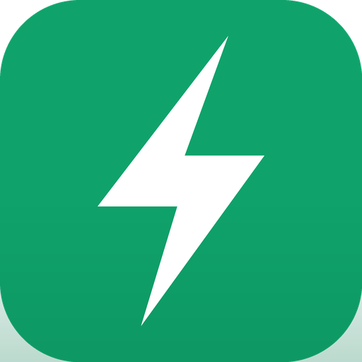

fastwork
Подработка по сменам
📱 Android
Скачивается файл, ставится за полминуты
Скачать приложение Не установилось? Скачать другой файл
Установка зависла? Это Play Защита проверяет незнакомый файл
на серверах Google. Play Маркет → нажми на свой значок →
«Play Защита» → шестерёнка → выключи «Сканировать приложения».
После установки можно включить обратно.
🍏 iPhone и iPad
Приложение добавляется прямо из Safari — без App Store
- Открой это приложение — обязательно в Safari, в других браузерах кнопки может не быть.
- Нажми «Поделиться» внизу экрана.
- Пролистай список вниз и выбери «На экран „Домой“».
- Готово — на рабочем столе появится значок.
Запускается во весь экран, без адресной строки и вкладок —
от обычного приложения не отличить. Аккаунт и смены те же, что
на Android.
💻 Компьютер
Приложение работает прямо в браузере
Открыть fastwork
Чтобы поставить на телефон, открой эту страницу с него —
она сама покажет, что делать для Android и для iPhone.